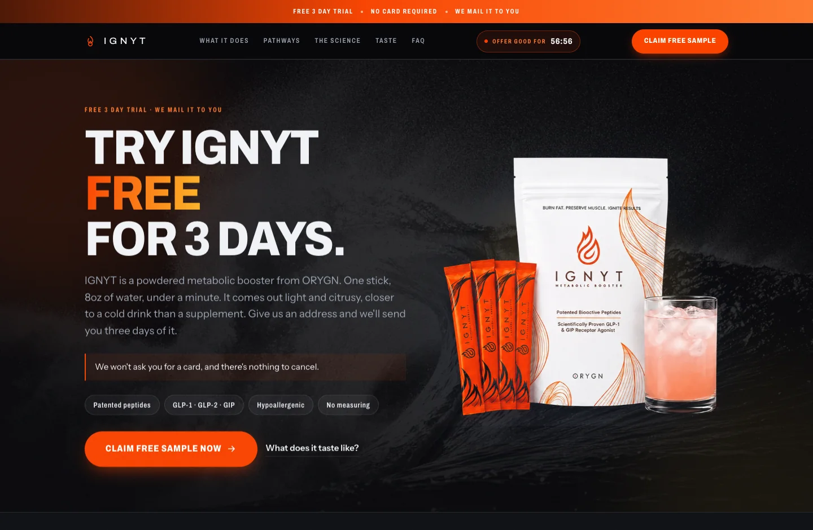
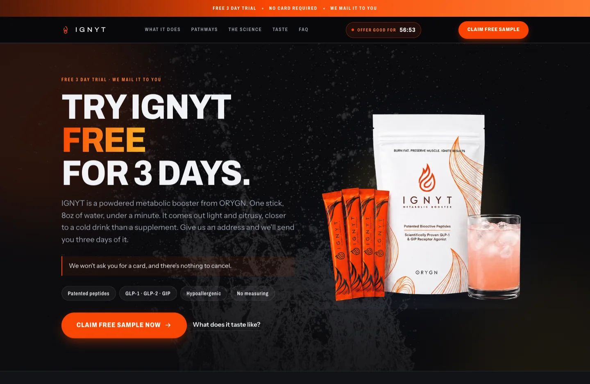
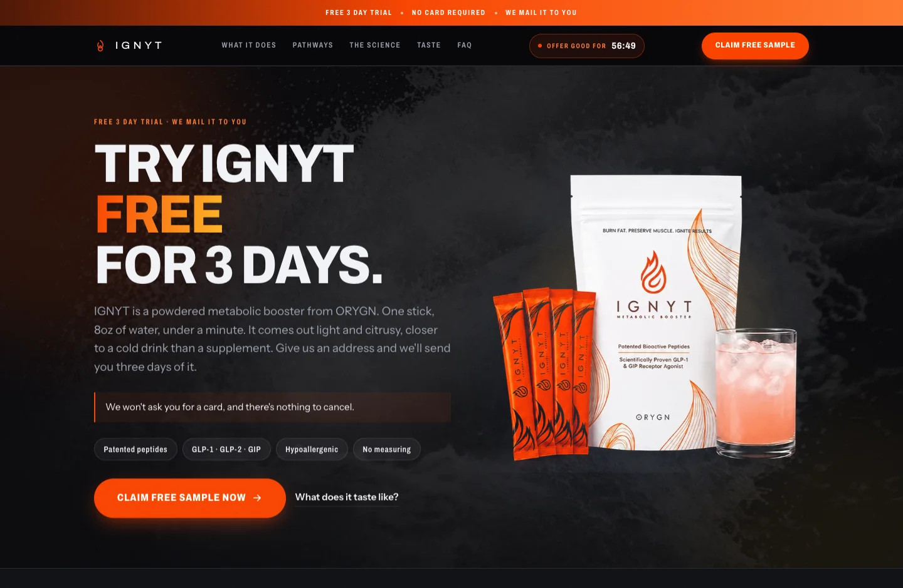

Same hero, same 17% opacity and the same radial mask. Only the photograph changes. At 17% over a black page only the brightest pixels survive, so the "pixels over 220" column is the one that predicts whether a plate reads as shape or as grey wash.
| Plate | pixels >180 | pixels >220 | read |
|---|---|---|---|
| wave | 18.5% | 6.4% | most true white, over double the rest |
| splash | 8.5% | 4.0% | mostly black, may read sparse |
| surge | 26.7% | 3.0% | mid-grey not white, risks a flat wash |
| family | 13.9% | 2.7% | the one on the live page now |


